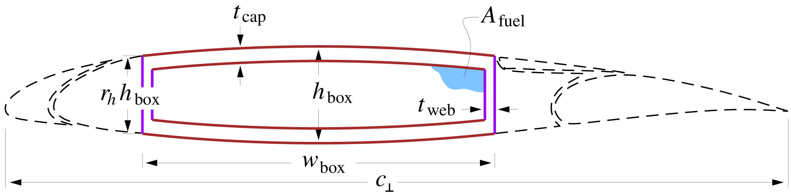

Wings and tails
The structural loads of the surfaces balance the net loads and moments resulting from weight and aerodynamics ($\tilde{p}$) as summarized in the Figure below. The distributions are also modified by point loads (i.e., engines and an optional strut).

The wing and tail surface stress and weight analyses are performed in the cross-sectional plane, normal to the spanwise axis $y_{\scriptscriptstyle \perp}$ running along the wing box. The assumed wing or tail airfoil and structural box cross-section is shown in the figure below. Note that leading edges, fairings, slats, flaps, and spoilers contribute to weight but not to the primary structure.

📖 Theory - Normal-plane Stresses
Together with the normal-plane coordinate and chord relations, the shear and bending moment are related to the corresponding airplane-axes quantities and to the sweep angle $\Lambda$ as follows.
\[\begin{aligned} {\cal S}_{\scriptscriptstyle \perp}& = & {\cal S} %\label{Sperp} \\ {\cal M}_{\scriptscriptstyle \perp}& = & {\cal M}/ \cos \Lambda %\label{Mperp} \end{aligned}\]
The box is assumed to be the only structurally-significant element, with the slats, flaps, and spoilers (if any), represented only by added weight. It is convenient to define all dimensions as ratios with the local normal-plane chord $c_{\scriptscriptstyle \perp}$.
\[\begin{aligned} \bar{h} &\!\equiv\!& \frac{h_{\rm wbox}}{c_{\scriptscriptstyle \perp}} \\ \bar{w} &\!\equiv\!& \frac{w_{\rm wbox}}{c_{\scriptscriptstyle \perp}} \\ \bar{t}_{\rm cap}&\!\equiv\!& \frac{t_{\rm cap}}{c_{\scriptscriptstyle \perp}} \\ \bar{t}_{\rm web}&\!\equiv\!& \frac{t_{\rm web}}{c_{\scriptscriptstyle \perp}} \end{aligned}\]
The maximum height $h_{\rm wbox}$ at the box center corresponds to the airfoil thickness, so that $\bar{h}$ is the usual "$t/c$" airfoil thickness ratio. The height is assumed to taper off quadratically to a fraction $r_h$ at the webs, so that the local height $h {\scriptstyle (\xi)}$ is $\begin{aligned} h {\scriptstyle (\xi)}& = & h_{\rm wbox}\left[ \: 1 - (1\!-\!r_h) \xi^2 \: \right] \end{aligned}$
where $\xi = -1 \ldots 1$ runs chordwise over the sparbox extent. Typical metal wings and airfoils have $\bar{w} \simeq 0.5$, $r_h \simeq 0.75$, although these are left as input parameters. For evaluating areas and approximating the bending inertia, it's useful to define the simple average and r.m.s. average normalized box heights.
\[\begin{aligned} \bar{h}_{\rm avg}& = & \frac{1}{c_{\scriptscriptstyle \perp}} \int_0^1 h {\scriptstyle (\xi)}\; {\rm d}\xi \;=\; \bar{h} \left[ \: 1 - \frac{1}{3}(1\!-\!r_h) \, \right] \\ \bar{h}_{\rm rms}^2 & = & \frac{1}{c_{\scriptscriptstyle \perp}^2} \int_0^1 h^2 {\scriptstyle (\xi)}\; {\rm d}\xi \;=\; \bar{h}^2 \left[ \: 1 - \frac{2}{3}(1\!-\!r_h) + \frac{1}{5} (1\!-\!r_h)^2 \, \right] \end{aligned}\]
The areas and the bending and torsion inertias, all normalized by the normal chord, can now be determined.
\[\begin{aligned} \bar{A}_{\rm fuel}&\!\equiv\!& \frac{A_{\rm fuel}}{c_{\scriptscriptstyle \perp}^2} \;=\; (\bar{w} - 2 \bar{t}_{\rm web})(\bar{h}_{\rm avg}- 2 \bar{t}_{\rm cap}) \\ \bar{A}_{\rm cap}&\!\equiv\!& \frac{A_{\rm cap}}{c_{\scriptscriptstyle \perp}^2} \;=\; 2 \, \bar{t}_{\rm cap}\bar{w} \\ \bar{A}_{\rm web}&\!\equiv\!& \frac{A_{\rm web}}{c_{\scriptscriptstyle \perp}^2} \;=\; 2 \, \bar{t}_{\rm web}\, r_h \, \bar{h} \\ \bar{I}_{\rm cap}& \simeq & \frac{I_{\rm cap}}{c_{\scriptscriptstyle \perp}^4} \;=\; \frac{\bar{w}}{12} \left[ \bar{h}_{\rm rms}^3 - (\bar{h}_{\rm rms}\!\!-\!2\bar{t}_{\rm cap})^3 \right] \\ \bar{I}_{\rm web}&\!\equiv\!& \frac{I_{\rm web}}{c_{\scriptscriptstyle \perp}^4} \;=\; \frac{\bar{t}_{\rm web}\, r_h^3 \, \bar{h}^3}{6} \; \ll \; \bar{I}_{\rm cap} \hspace{2em} \mathrm{(typically)} \\ G\bar{J} &\!\equiv\!& \frac{4 (\bar{w} - \bar{t}_{\rm web})^2 (\bar{h}_{\rm avg}- \bar{t}_{\rm cap})^2} { \displaystyle 2 \frac{ r_h \bar{h} \!-\! \bar{t}_{\rm cap}}{G_{\rm web}\bar{t}_{\rm web}} \:+\: 2 \frac{ \bar{w} \!-\! \bar{t}_{\rm web}}{G_{\rm cap}\bar{t}_{\rm cap}} } \end{aligned}\]
TASOPT.structures.size_wing_section! — Method
size_wing_section!(section, sweep, sigfac)Calculates Loads and thicknesses for wing sections
TASOPT.structures.wing_weights! — Method
wing_weights!(wing, po, gammat, gammas,
Nload, We, neout, dyeout, neinn, dyeinn, sigfac, rhofuel; n_wings=2.0)Calculates Wing or Tail loads, stresses, weights of individual wing sections. Also returns the material gauges, torsional and bending stiffness. Formerly, get_wing_weights!().
🔃 Inputs and Outputs
Inputs:
wing::TASOPT.structures.Wing: Wing structure.po::Float64: Wing root loading magnitude.gammat::Float64: Wing outer section taper ratio.gammas::Float64: Wing inner section taper ratio.Nload::Int: Max vertical load factor for wing bending loads.We::Float64: Weight of the engine.neout::Int: Number of engines mounted outboard of the wing break (strut attachment point).dyeout::Float64: Spanwise moment arm for outboard engines, measured from the wing break station.neinn::Int: Number of engines mounted inboard of the wing break (strut attachment point).dyeinn::Float64: Spanwise moment arm for inboard engines, measured from the wing break station.sigfac::Float64: Stress Factor.rhofuel::Float64: Density of the fuel.n_wings::Int64: Number of total wings (1 for Vtail).
See Geometry, Wing/Tail Structures, and Section 2.7 of the TASOPT Technical Description.
TASOPT.structures.calculate_centroid_offset — Method
calculate_centroid_offset(b, bs, bo, λt, λs, sweep)Calculates area centroid x-offset due to sweep and the mean aerodynamic chord (normalized by root chord, co)
🔃 Inputs and Outputs
Inputs:
b::Float64: Wingspanbs::Float64: Spanwise location of the start of the taperbo::Float64: Spanwise location of the root chordλt::Float64: Tip chord ratio (tip chord / root chord)λs::Float64: Start chord ratio (start chord / root chord).sweep::Float64: Sweep angle in degrees.
Outputs:
dx::Float64: Area centroid x-offset due to sweepmacco::Float64: Mean aerodynamic chord normalized by root chord.
See Geometry or Section 2.5.1 of the TASOPT Technical Description.